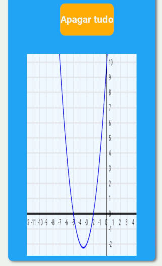
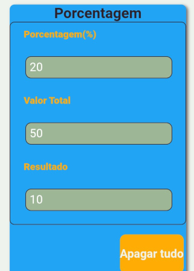

Como usar as Calculadoras
Como navegar entre os cálculos
Clique no ícone de menu (as três barras no canto superior esquerdo) para alternar entre as calculadoras.
Nele você encontra todas as opções disponiveis, a qualquer momento.
Escolha seu Estilo
No modo Passo a Passo você recebe o resultado com o caminho até chegar o resultado.
Ideal para quem quer entender a lógica matemática.
Exemplo no modo Passo a Passo

Exemplo de resolução de equação do segundo grau usando Bhaskara.

Visualização das raízes da função no gráfico.
Modo Cálculo Rápido

Digite os valores e o resultado aparece automaticamente.
Controle Total
Use o botão de Calcular para validar os dados manualmente, quando o modo Passo a Passo estiver ativo.
O botão Apagar Tudo limpa todos os campos para iniciar um novo problema.
Qual estilo escolher?
"Porque usar o Passo a Passo?"" - Para entender a lógica e gabaritar na prova.
"Quando usar o Cálculo Rápido?" - Para conferir resultado e listas de exercícios extensas.
Aprenda e Calcule em Segundos
Resolva problemas de matemática em um só lugar. Otimize cálculos, pratique conceitos e explore ferramentas que tornam o aprendizado mais simples e acessível com a calculadora matemática online do Algebrando.
No Algebrando, você pode resolver expressões e equação de forma intuitiva, utilizando uma calculadora pensada tanto para quem precisa apenas do resultado quanto para quem deseja entender o processo. Nossa calculadora de equação permite que você escolha entre dois modos de uso, adaptando-se perfeitamente ao seu objetivo de estudo ou trabalho online:
Modo Passo a Paso: Mostra a resolução passo a passo e detalha a lógica por trás de cada etapa da equação.
Modo Cálculo Rápido: Fornece o resultado imediatamente após inserir os valores, ideal para conferir respostas rápidas.
Além disso, oferecemos uma calculadora de porcentagem robusta para você descobrir aumentos, descontos e valores de porcentagem rapidamente, facilitando cálculos do dia a dia e exercícios financeiros.